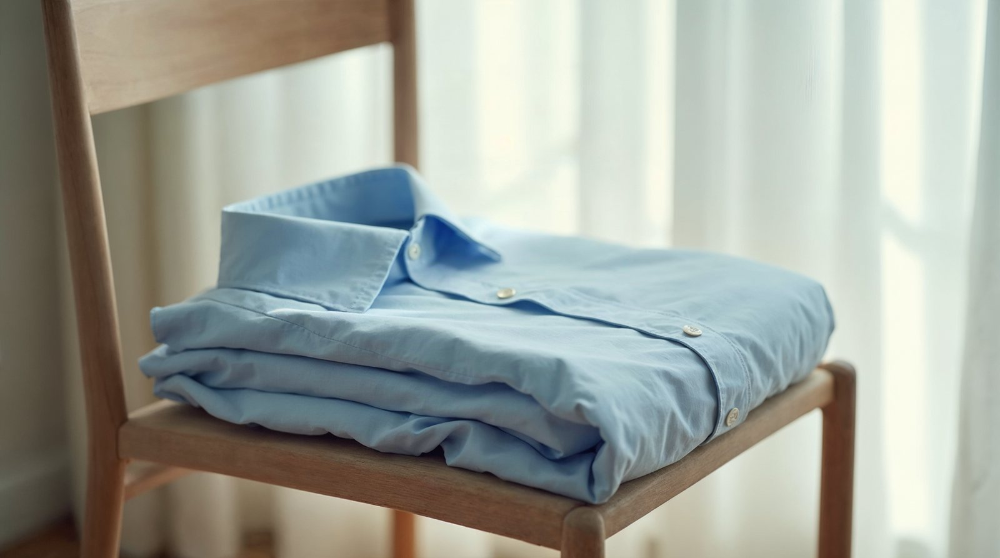
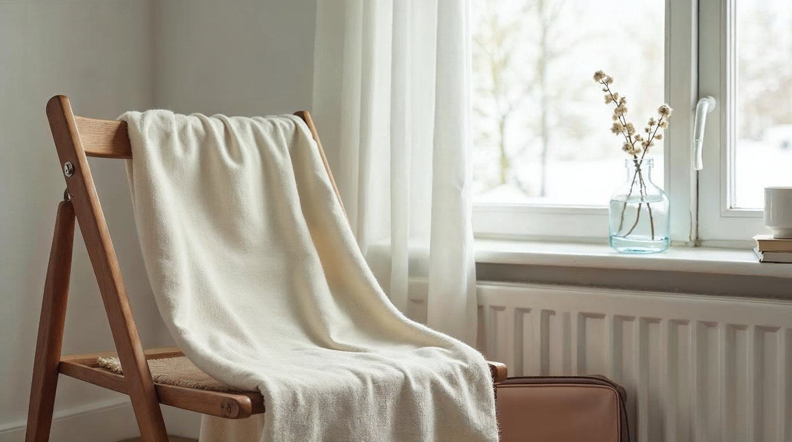
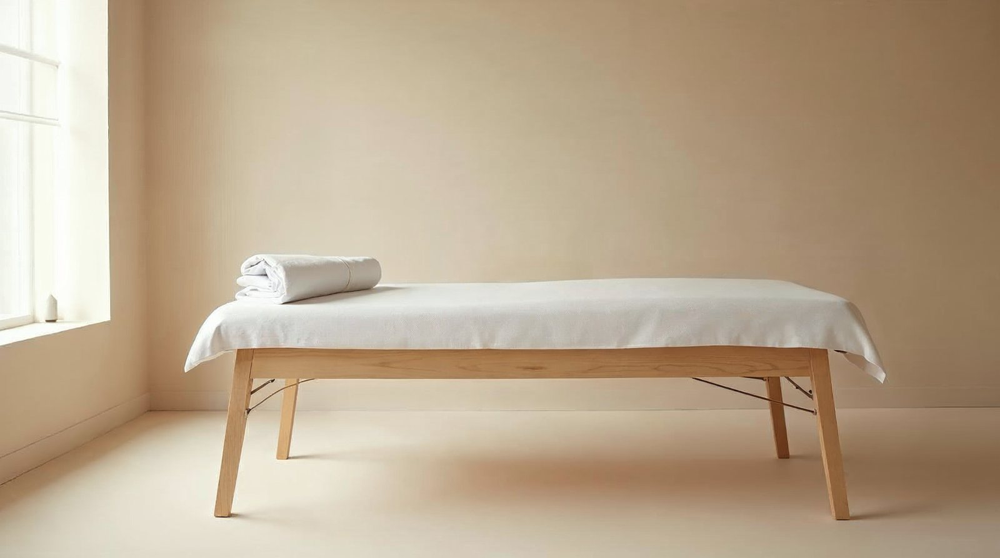
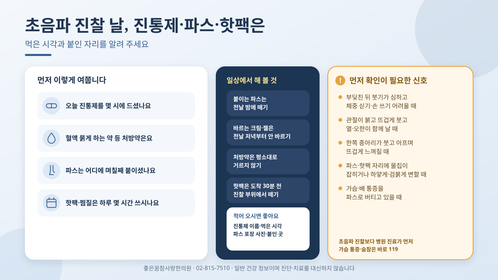

이종호 한의사 감수좋은꿈참사랑한의원 대표원장 (한의사 면허번호 19769)발행 2026-11-27 · 수정 2026-11-27
이 글의 차례
겨울이 되면 무릎이나 어깨, 손목에 파스를 붙인 채 지내고, 외투 주머니에는 핫팩을 넣고 다니는 분이 많아요. 아파서 초음파 진찰을 예약해 두셨는데, 그날 아침이 되면 고민이 생기죠. 진통제를 먹고 가도 되나, 붙여 둔 파스는 떼고 가야 하나. 진료실에서 정말 자주 듣는 질문이에요.
결론부터 말씀드릴게요. 처방받아 드시는 약은 평소대로 드시고, 먹은 시각만 적어 오시면 돼요. 스스로 사서 드시는 진통제는 참을 만하면 진찰 뒤로 미뤄 볼 수 있고, 참기 어렵다면 드시되 시각을 알려 주시면 되고요. 아픈데 억지로 참고 오시라는 말은 아니에요.
붙이는 파스는 진찰 전날 밤에 떼어 피부를 쉬게 하고, 바르는 소염 크림은 당일 아침엔 바르지 않으며, 핫팩은 진찰 받을 부위에 대지 않고 오시는 게 좋아요.
왜인 줄 아세요? 초음파 진찰은 화면만 보는 게 아니거든요. 아픈 자리를 눌러 보고, 아픈 동작을 함께 해 보며 화면 속 구조와 맞춰 보는 과정이 있어요. 그러니까 사실은 '화면에 보이는 것'과 '오늘 느끼는 통증'을 같이 읽는 건데, 오늘 무엇을 먹고 붙이고 왔는지 알면 그 둘을 훨씬 정확하게 맞춰 볼 수 있는 거예요.
왜 진통제와 파스, 핫팩이 초음파 진찰에 영향을 줄까요
- 초음파 진찰에서는 탐촉자로 아픈 자리를 눌러 가장 아픈 지점이 화면의 어느 구조(힘줄, 인대, 점액낭, 근육)와 겹치는지 맞춰 봅니다. 진통제가 듣는 시간에는 눌렀을 때 통증이 덜해 정확한 위치를 짚기 어려울 수 있습니다.
- 팔을 들어 올리거나 무릎을 굽히며 움직이는 동안 화면을 보는 경우에도, 통증이 가려져 있으면 평소 걸리던 각도와 다르게 움직여 평소의 모습을 확인하기 어려워집니다.
- 진통제는 종류에 따라 몇 시간에서 반나절 넘게 작용하므로, 먹은 시각을 알면 지금의 통증이 약 기운이 남은 상태인지 판단하는 데 참고가 됩니다.
- 붙이는 파스는 접착제가 피부 각질과 솜털에 붙어 있어 떼어 낸 직후 피부가 붉고 예민해집니다. 그 자리에 탐촉자를 누르고 젤을 닦으면 따갑거나 가려울 수 있습니다.
- 파스를 붙인 채로는 탐촉자를 댈 수 없어 진찰 중에 떼야 하고, 남은 접착제와 약 성분이 젤과 섞이면 탐촉자가 잘 밀착되지 않아 화면이 흐려지기도 합니다.
- 화끈하거나 시원한 느낌을 주는 파스와 크림은 그 자리의 감각을 평소와 다르게 만들어, 눌렀을 때 아픈 정도를 표현하기 어렵게 합니다. 병원에서 처방받는 국소 마취 성분 패치는 그 자리를 둔하게 만들기도 합니다.
- 핫팩을 오래 댄 자리는 피부가 붉어지고 혈류가 늘어나, 붓기나 열감을 살필 때 헷갈림을 줄 수 있습니다. 초음파로 혈류를 함께 살펴볼 때는 데워진 피부 때문에 늘어난 흐름과 염증으로 늘어난 흐름을 구분하기가 번거로워집니다.
- 보호대를 오래 차고 온 경우에는 압박 자국과 일시적인 붓기가 남아 있을 수 있어, 언제부터 찼는지 알려 주시면 도움이 됩니다.
- 같은 부위라도 아침에 일어난 직후에는 뻣뻣함이 크고, 오후에는 하루 동안 쓴 만큼 붓기가 늘어나는 등 시간대에 따라 모습이 조금 달라 보일 수 있습니다. 진찰 시각과 그날의 활동을 함께 적어 두면 다음 진찰과 비교하기 쉽습니다.
- 그렇다고 약과 파스를 다 끊어야 하는 것은 아닙니다. 무엇을 언제 썼는지만 알면 그에 맞춰 해석을 조정할 수 있습니다.
먼저 이렇게 여쭙니다
- 오늘 진통제를 드셨는지, 드셨다면 어떤 약을 몇 시에 드셨는지, 평소 일주일에 몇 번쯤 드시는지 여쭙니다.
- 혈액을 묽게 하는 약, 스테로이드, 당뇨약처럼 꾸준히 드시는 처방약이 있는지 여쭙니다.
- 파스는 붙이는 것인지 바르는 것인지, 시원한 것인지 화끈한 것인지, 같은 자리에 며칠째 붙이셨고 마지막으로 언제 떼셨는지 여쭙니다.
- 파스를 붙인 자리가 가렵거나 붉어지고 물집이 생긴 적이 있는지 여쭙니다.
- 핫팩이나 전기장판, 찜질을 어느 부위에 하루 몇 시간쯤 쓰시는지 여쭙니다.
- 최근 다른 병원에서 주사 치료를 받으셨다면 어느 부위에 언제 받으셨는지 여쭙니다.
- 하루 중 언제, 어떤 동작에서 가장 아픈지, 피부 질환이나 감각이 둔한 곳이 있는지 여쭙니다.
- 진찰 전 몇 시간 동안 아픈 부위를 많이 쓰는 일(장보기, 계단, 운동)을 하셨는지 여쭙니다. 직전 활동량에 따라 붓기와 통증이 달라 보일 수 있습니다.

일상에서 먼저 해 볼 수 있는 것
진찰 2~3일 전
- 아픈 동작을 메모합니다. 팔을 어디까지 올리면 아픈지, 계단을 오를 때와 내려갈 때 중 언제 아픈지, 통증 점수(0~10)를 함께 적습니다.
- 진통제를 먹은 날과 시각을 달력에 표시해 두면 통증이 심한 시간대가 보입니다.
- 파스를 붙인 자리가 이미 붉고 가렵다면 진찰 전 하루 이틀은 붙이지 않고 피부를 쉬게 합니다.
진찰 전날 밤
- 붙이는 파스는 잠자리에 들기 전에 뗍니다. 한 손으로 피부를 누른 채 털이 난 방향으로 천천히 떼고, 잘 떨어지지 않으면 미지근한 물을 적셔 불린 뒤 뗍니다. 남은 끈적임은 순한 비누로 씻어 냅니다.
- 바르는 소염 크림이나 젤은 저녁 이후에는 진찰 받을 부위에 바르지 않습니다.
- 전기장판이나 온열 매트를 그 부위에 직접 대고 자지 않습니다.
진찰 당일 아침
- 가볍게 샤워하고, 진찰 받을 부위에는 보습 크림이나 오일을 바르지 않습니다.
- 처방받은 약은 평소대로 드시고, 혈액을 묽게 하는 약은 임의로 거르지 않습니다.
- 스스로 사서 드시는 진통제는 참을 만하면 진찰 뒤로 미뤄 보고, 참기 어렵다면 드신 뒤 시각을 메모합니다.
- 어깨라면 앞이 열리는 셔츠나 민소매 속옷, 무릎이라면 걷어 올리기 쉬운 바지를 입고, 두꺼운 기모 레깅스나 타이츠는 피합니다.
- 진찰 직전에 아픈 부위를 일부러 많이 써서 통증을 끌어올리거나, 반대로 하루 종일 꼼짝 않고 아끼다 오실 필요는 없습니다. 평소 하루처럼 지내다 오시는 것이 지금 상태를 보기에 알맞습니다.
오시는 길과 도착 뒤
- 핫팩은 손에 쥐거나 주머니에 넣고, 진찰 받을 부위에는 대지 않습니다. 이미 대고 있었다면 도착 30분 전쯤 떼어 둡니다.
- 언덕길이나 계단을 걸어오셨다면 도착 뒤 5~10분 앉아 쉬며 몸의 열과 숨을 고릅니다.
- 접수할 때 오늘 먹은 약과 파스·핫팩 사용을 미리 말씀해 주시면 진찰 순서를 정하기 쉽습니다.
진찰 뒤
- 젤은 마른 수건으로 닦고, 집에 가서 미지근한 물로 한 번 더 씻어 냅니다. 초음파 젤은 물에 잘 씻기는 성분이라 옷에 조금 묻어도 대개 세탁하면 지워집니다.
- 파스를 다시 붙일지, 찜질은 따뜻하게 할지 차갑게 할지는 진찰 내용을 들은 뒤 정합니다. 피부가 붉다면 그날은 붙이지 않습니다.

상황별 예시
- 예를 들어 무릎 앞쪽이 아파 몇 주째 매일 같은 자리에 파스를 붙여 온 분이라면, 진찰 전날 밤 떼어 피부를 쉬게 하고 오십니다. 피부가 이미 붉고 가렵다면 진찰 때 피부 상태부터 함께 보고, 파스를 쉬는 동안 쓸 수 있는 다른 방법을 상의합니다.
- 예를 들어 어깨 통증으로 밤잠을 설쳐 아침마다 진통제를 먹는 직장인이 오전 10시에 초음파 진찰을 예약했다면, 먹은 시각을 메모해 오시면 됩니다. 약 기운이 덜한 상태의 어깨를 보고 싶다면 평일 저녁 진료 시간으로 예약을 옮기는 것도 방법입니다.
- 예를 들어 혈액을 묽게 하는 약을 드시는 어르신이 손목 통증으로 오신다면, 약은 평소대로 드시고 그 사실을 먼저 알려 주세요. 멍이 잘 드는 편이라면 탐촉자로 누르는 힘을 조절하며 살핍니다.
- 예를 들어 출퇴근길 내내 허리와 엉덩이에 핫팩을 붙이고 다니는 분이 엉덩이 바깥쪽 통증으로 진찰을 받는다면, 그날은 핫팩을 붙이지 않고 오셔야 붉은 자국과 열감 때문에 헷갈리는 일을 줄일 수 있습니다.
- 예를 들어 최근 다른 병원에서 어깨에 주사 치료를 받은 분이라면, 받은 날짜와 부위를 알려 주셔야 화면에 보이는 모습을 함께 고려할 수 있습니다.
자주 하는 오해
- 정확한 결과를 위해 모든 약을 끊고 가야 한다고 생각하는 분이 있습니다. 처방약, 특히 혈액을 묽게 하는 약이나 혈압약을 임의로 거르면 오히려 위험할 수 있어, 평소대로 드시고 알려 주시면 됩니다.
- 진통제를 먹으면 초음파에 아무것도 안 보인다고 걱정하기도 합니다. 초음파는 힘줄과 근육, 물이 고인 모습 같은 구조를 보는 것이라 그 모습이 사라지지는 않고, 아픈 위치를 맞춰 보는 과정이 조금 어려워질 뿐입니다.
- 파스를 붙인 채 그 위로도 볼 수 있다고 여기기 쉽지만, 탐촉자는 피부에 직접 닿아야 해서 진찰 중에 떼야 합니다. 미리 떼어 두는 편이 피부에도 부담이 적습니다.
- 가장 아픈 날에 와야 잘 보인다고 생각해 통증이 심해질 때까지 기다리는 분도 있습니다. 구조의 변화는 덜 아픈 날에도 보이는 경우가 많아, 일정에 맞춰 예약하고 아픈 동작을 메모해 오시면 충분합니다.
- 핫팩으로 따뜻하게 하고 가면 덜 아파 진찰받기 편하다고 여기기도 하지만, 데워진 피부는 붓기와 열감을 살피는 데 헷갈림을 줄 수 있습니다.
- 파스를 오래 붙여 둘수록 더 잘 듣는다고 여겨 하루 종일 같은 자리에 붙이는 분도 있습니다. 포장에 적힌 사용 시간을 넘겨 붙이면 피부염이 생기기 쉬워, 정해진 시간만큼만 쓰고 피부를 쉬게 하는 편이 좋습니다.
스스로 점검해 보세요
- 오늘 진통제를 먹었다면 몇 시에 먹었는지 기억한다.
- 같은 자리에 파스를 며칠째 붙이고 있다.
- 파스를 뗀 자리가 붉거나 가렵고, 물집이 생긴 적이 있다.
- 진찰 받을 부위에 핫팩이나 전기장판을 오래 대는 편이다.
- 혈액을 묽게 하는 약을 먹거나 최근 주사 치료를 받았다.
- 어떤 동작에서 아픈지 메모해 두었다.
- 진찰 부위를 드러내기 쉬운 옷을 준비했다.

한의원에서 함께 살필 수 있는 경우
- 진통제와 파스 없이는 일상이 어려운 통증이 몇 주째 이어지는 경우
- 파스를 바꿔 가며 붙여도 같은 자리가 계속 아파, 어떤 구조가 불편한지 확인하고 싶은 경우
- 피부가 예민해 파스를 쓰기 어려워 다른 방법을 상의하고 싶은 경우
- 겨울마다 핫팩과 찜질에 기대 지내는 통증의 흐름을 정리하고 싶은 경우
좋은꿈참사랑한의원에서는 첫 방문 때 맥부터 짚어 보고, 언제부터 어떤 동작에서 아팠는지와 함께 그동안 써 온 진통제와 파스, 핫팩, 찜질을 여쭙습니다. 이어 혀와 배를 살펴 잠과 소화, 몸의 긴장 상태를 확인한 뒤, 아픈 부위를 직접 보고 만지며 움직여 봅니다.
구조를 눈으로 확인할 필요가 있다고 판단되면 초음파로 아픈 쪽과 반대쪽을 비교해 살피고, 화면을 함께 보며 설명해 드립니다. 그 내용을 바탕으로 침, 체외충격파 같은 진료와 집에서의 파스·찜질 사용을 함께 정합니다. 골절이나 디스크처럼 초음파로 보기 어려운 부분이 의심되면 병원 검사를 먼저 안내해 드립니다.
초음파 진찰이 가능한 부위와 걸리는 시간은 방문 전 전화로 확인해 주세요. 다시 오시면 지난번 화면과 그사이의 통증 기록, 약과 파스 사용량을 이어서 비교합니다.
얼마나 지켜보고 언제 상담할까요
- 파스와 진통제로 버틴 지 2주가 넘었는데 통증이 그대로라면 상담을 받아 보세요.
- 일반 진통제를 하루 여러 번, 일주일 넘게 이어서 드시고 있다면 위와 콩팥에도 부담이 될 수 있어 약사나 의사와 상의합니다.
- 파스를 뗀 뒤 2~3일이 지나도 붉음과 가려움이 가라앉지 않거나 물집과 진물이 생기면 피부과 진료를 받습니다.
- 아래 신호가 있으면 기다리지 말고 진료를 먼저 받습니다.
이렇게 기록해 오시면 상담이 쉬워집니다
진통제와 파스는 너무 익숙해서, 막상 "얼마나 쓰셨어요?" 하고 여쭈면 대부분 잘 기억을 못 하세요. 원래 그래요. 습관처럼 쓰는 건 기억에 잘 안 남거든요. 포장 사진 몇 장이면 충분해요.
- 최근 2주 동안 먹은 진통제 이름과 횟수, 오늘 먹은 시각
- 쓰고 있는 파스와 크림의 이름(포장 사진이면 충분합니다), 붙인 부위와 기간
- 핫팩, 전기장판, 찜질을 쓴 부위와 하루 사용 시간
- 아픈 동작과 통증 점수, 가장 아픈 시간대
- 진찰 전날과 당일에 아픈 부위를 많이 쓴 일(김장, 대청소, 운동 등)
- 최근 받은 주사 치료나 다른 병원 검사 결과
- 꾸준히 드시는 처방약 목록
화면을 보고 설명하고 치료를 정하는 건 제가 맡을게요. 대신 하나만 부탁드려요. 진찰 전날 밤, 진찰 받을 자리의 파스만 떼어 두세요. 그거 하나면 돼요. 나머지는 오셔서 같이 정리하면 됩니다.
딴 건 평소처럼 하셔도 괜찮아요. 처방받은 약은 거르지 마시고, 아프면 아프다고 그냥 말씀해 주세요. 진찰 중에 누르는 자리가 많이 불편하면 바로 얘기하셔도 돼요. 궁금한 건 그날 화면을 같이 보면서 편하게 물어보세요.
이런 증상은 먼저 확인이 필요합니다
- 넘어지거나 부딪친 뒤 붓기가 심하고 체중을 싣거나 손을 쓰기 어려운 경우
- 관절이 붉고 뜨겁게 붓고 열과 오한이 함께 나는 경우
이런 신호가 있으면 한의원보다 가까운 병원이나 응급실을 먼저 찾으세요.
관련 글

여쭙는 것
- 오늘 진통제를 드셨는지, 드셨다면 어떤 약을 몇 시에 드셨는지, 평소 일주일에 몇…
- 혈액을 묽게 하는 약, 스테로이드, 당뇨약처럼 꾸준히 드시는 처방약이 있는지 여쭙니다.
- 파스는 붙이는 것인지 바르는 것인지, 시원한 것인지 화끈한 것인지, 같은 자리에 며…
생활에서 해 볼 것
- 아픈 동작을 메모합니다. 팔을 어디까지 올리면 아픈지, 계단을 오를 때와 내려갈 때…
- 진통제를 먹은 날과 시각을 달력에 표시해 두면 통증이 심한 시간대가 보입니다.
- 파스를 붙인 자리가 이미 붉고 가렵다면 진찰 전 하루 이틀은 붙이지 않고 피부를 쉬…
한의원에서 함께 살필 것
- 진통제와 파스 없이는 일상이 어려운 통증이 몇 주째 이어지는 경우
- 파스를 바꿔 가며 붙여도 같은 자리가 계속 아파, 어떤 구조가 불편한지 확인하고 싶…
- 피부가 예민해 파스를 쓰기 어려워 다른 방법을 상의하고 싶은 경우
먼저 확인이 필요한 신호
- 넘어지거나 부딪친 뒤 붓기가 심하고 체중을 싣거나 손을 쓰기 어려운 경우
- 관절이 붉고 뜨겁게 붓고 열과 오한이 함께 나는 경우
한눈에 보는 표
| 구분 | 핵심 |
|---|---|
| 여쭙는 것 | 오늘 진통제를 드셨는지, 드셨다면 어떤 약을 몇 시에 드셨는지, 평소 일주일에 몇 번쯤 드시는지 여쭙니다. 혈액을 묽게 하는 약, 스테로이드, 당뇨약처럼 꾸준히 드시는 처방약이 있는지 여쭙니다. |
| 생활에서 해 볼 것 | 아픈 동작을 메모합니다. 팔을 어디까지 올리면 아픈지, 계단을 오를 때와 내려갈 때 중 언제 아픈지, 통증 점수(0~10)를 함께 적습니다. 진통제를 먹은 날과 시각을 달력에 표시해 두면 통증이 심한 시간대가 보입니다. |
| 한의원에서 함께 살필 것 | 진통제와 파스 없이는 일상이 어려운 통증이 몇 주째 이어지는 경우 파스를 바꿔 가며 붙여도 같은 자리가 계속 아파, 어떤 구조가 불편한지 확인하고 싶은 경우 |
| 먼저 확인이 필요한 신호 | 넘어지거나 부딪친 뒤 붓기가 심하고 체중을 싣거나 손을 쓰기 어려운 경우 관절이 붉고 뜨겁게 붓고 열과 오한이 함께 나는 경우 |
자주 묻는 질문
초음파 진찰 날 아침에 진통제를 먹으면 다시 와야 하나요?
다시 오실 필요는 대부분 없습니다. 드신 약과 시각을 알려 주시면 그에 맞춰 눌러 보는 진찰과 동작 확인을 해석하고, 필요하면 다음 진료 때 약 기운이 덜한 상태에서 한 번 더 비교합니다.
파스는 몇 시간 전에 떼면 되나요?
진찰 전날 밤에 떼어 하룻밤 피부를 쉬게 하는 것이 무난합니다. 깜빡했다면 오시기 전에 떼고, 남은 끈적임을 물로 닦아 오시면 됩니다.
바르는 크림이나 젤 타입 소염제도 영향을 주나요?
크림이 피부에 남아 있으면 탐촉자가 미끄러지거나 젤과 섞여 화면이 흐려질 수 있고, 화끈하거나 시원한 성분은 감각을 바꿀 수 있습니다. 진찰 당일 아침에는 바르지 않는 편이 좋습니다.
혈액을 묽게 하는 약을 먹고 있는데 초음파 진찰을 받아도 되나요?
초음파 진찰은 피부 위에서 살펴보는 방법이라 약을 끊지 않고 받을 수 있습니다. 약은 평소대로 드시고 먼저 알려 주시면, 누르는 힘을 조절하고 함께 받는 진료를 정할 때 고려합니다.
핫팩을 쓰면 안 되는 건가요?
평소 추위를 막기 위해 쓰는 것은 괜찮습니다. 다만 진찰 받을 부위에는 오시기 30분 전쯤부터 대지 않는 것이 좋고, 감각이 둔한 곳에 오래 대면 저온 화상을 입을 수 있어 피부에 직접 붙이지 않도록 주의합니다.
좋은꿈참사랑한의원은 재진 때 지난번 이야기부터 이어서 여쭙니다. 진료시간과 예약은 오시는 길에서 확인하세요.
어디서 상담받을 수 있나요?
좋은꿈참사랑한의원은 서울 동작구 만양로2길 2 신성빌딩 3층·5층(서울 동작구 상도동, 7호선 상도역 3번 출구 근처)에 있습니다. 한의사 3명(이종호 대표원장, 조영기 수석진료원장, 정원영 진료원장)이 진료합니다. 진료시간은 평일 09:30~20:00(점심 13:00~14:00), 토·일·공휴일 09:30~15:00이며, 방문 전 전화로 확인을 권합니다. 예약은 네이버 예약, 카카오톡 상담, 전화 02-815-7510로 받습니다.
이 글은 일반적인 건강 정보이며 개인의 진단이나 치료를 대신하지 않습니다. 증상이 있거나 복용 중인 약이 있다면 진료를 통해 확인하세요. 치료 효과는 개인마다 다를 수 있습니다.
작성 기준: 일반적으로 알려져 있는 건강 정보를 참고해 정리했습니다(대표원장 감수). 증상 기록은 1~2주 동안 하루 1회, 비슷한 시간에 적어 오시면 지난 상태와 비교하기 쉽습니다.